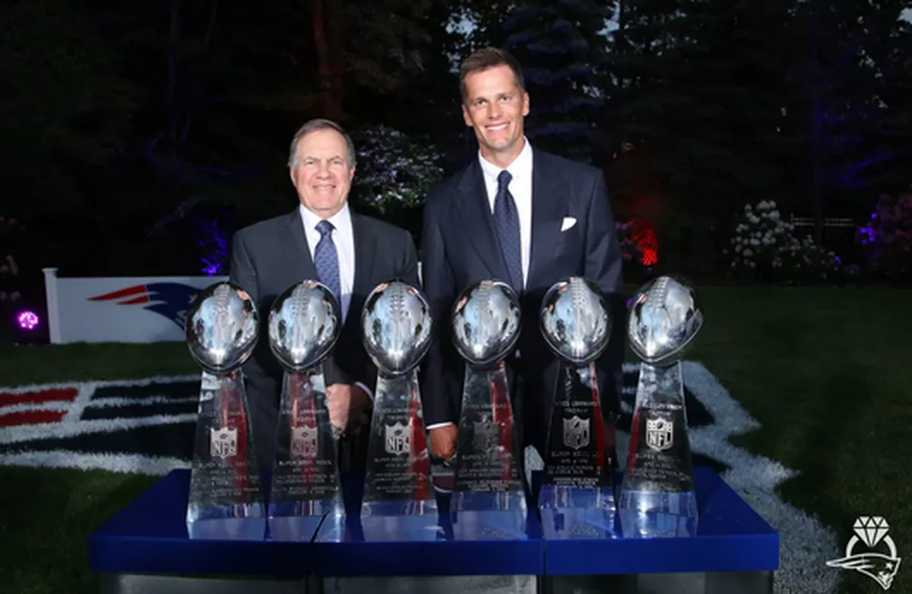

História dos Patriots
Origem em Boston
Fundado inicialmente com o nome de Boston Patriots em 1960, jogou dez anos na AFL antes da fusão das ligas, em 1970. Quando passou a mandar seus jogos em Foxborough, no ano seguinte, mudou de nome para New England Patriots.
Essas foram os dois primeiros simbolos/logo dos Patriots.
Uniformes
Os primeiros uniformes dos Patriots tinha uma cor mais vermelha, fazendo contraste com o azul do chapeuzinho, porém com a chegada da nova logo com o americano de chapeu azul (apartir de 1961) o time adotou a logo no capacete e faixas azuis nos ombros.
Tom Brady no draft
Na penultima escolha do draft de 2000, com um jogador praticamente desconhecido, na sua descrição comntarios como:
–Fraco..
–Muito magro e fino.
–Consegue ser derrubado mais facilmente do que se imagina.
–Dificuldade em se locomover e de fugir do pass rush

Porém foi Tom Brady que como QuarterBack titular que deu 6 SB's para a franquia de massachusetts, sendo o jogador com mais Super Bowls da historia e tornando a equipe com mais Super Bowls também.
O Super Bowl 51
Declarado por muitos como o maior jogo da historia por ser uma narrativa, execução e climax perfeito, um jogo que começa comuma surra do Atlanta Falcons que inicia com 28 pontos contra 3 dos Patriots, porém Tom Brady no fim do terceiro quarto inicia uma virada historica, confira no video abaixo os melhores momentos:
Então é isso, aqui é um site sobre um pouco da historia do maior time do mundo.